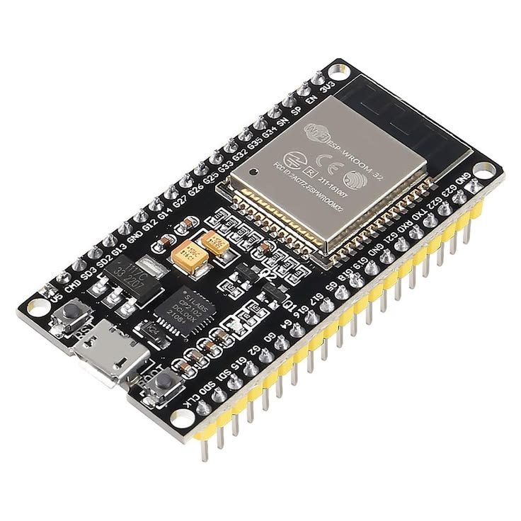

Electronic boards are important tools used in electronics, robotics, automation, Internet of Things projects, and embedded systems. Some boards are simple microcontroller boards, while others are complete single-board computers.
In this page, we will talk about three popular electronic boards: Arduino Uno, Raspberry Pi, and ESP boards such as ESP8266 and ESP32.
The Arduino Uno is one of the most popular microcontroller boards for beginners and professionals alike. Built around the ATmega328P, it provides a simple and reliable platform for building electronics projects such as sensors, robotics, and automation systems.

The Raspberry Pi is a compact single-board computer capable of running a full operating system like Linux. Unlike microcontrollers, it functions as a complete computer, allowing users to perform tasks such as web browsing, programming, media streaming, and running servers.

The ESP32 and its earlier version, the ESP8266, are powerful microcontrollers designed for Internet of Things applications. These boards feature built-in Wi-Fi and Bluetooth connectivity, allowing devices to communicate wirelessly without additional modules.
